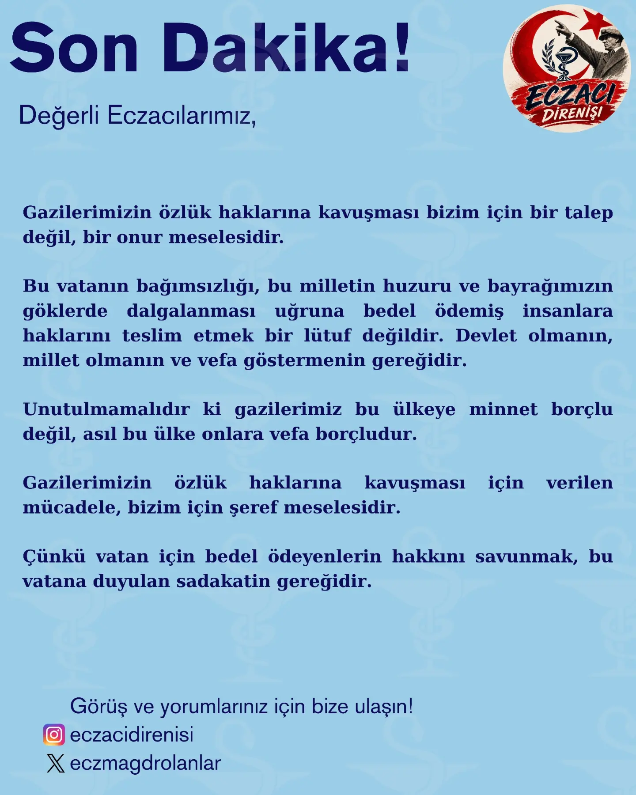
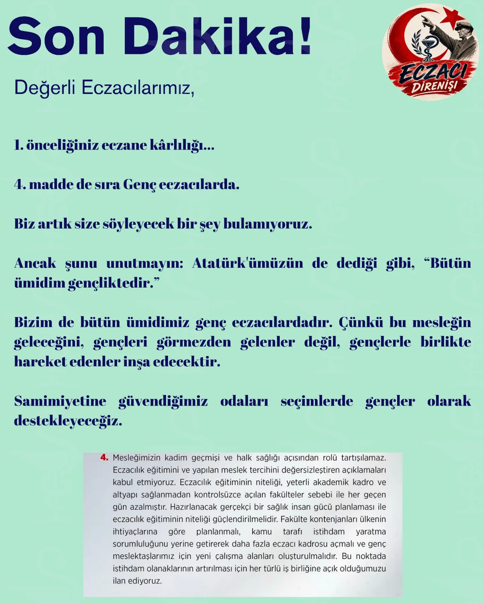
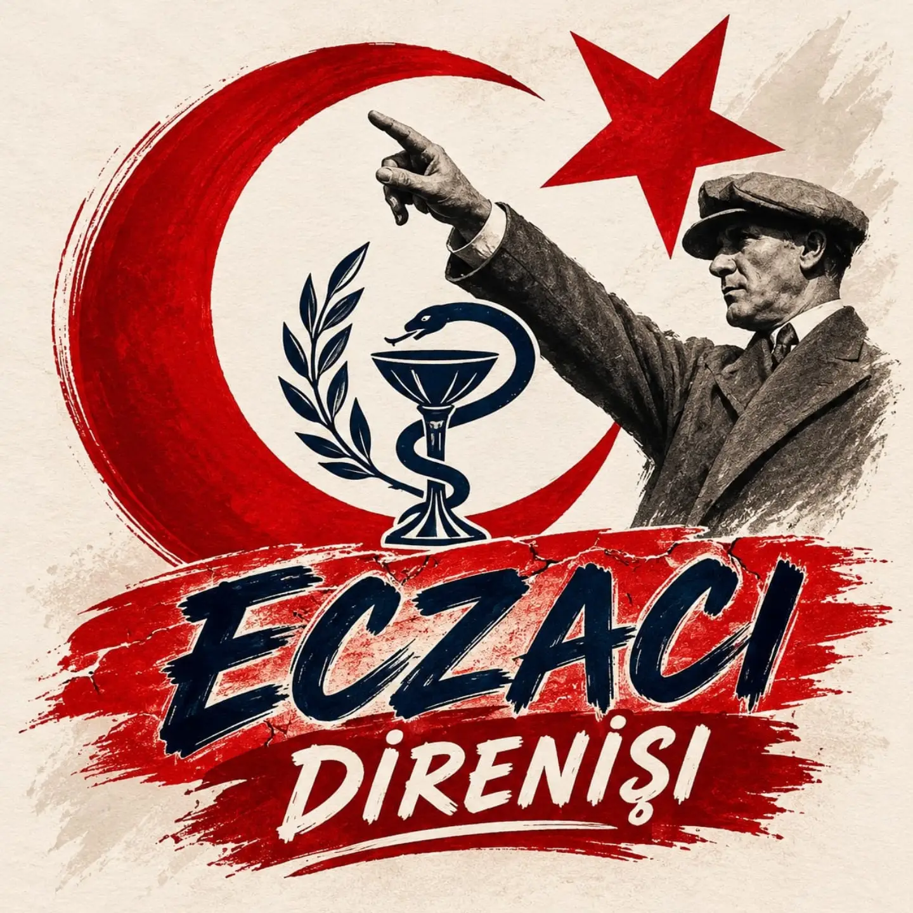

Gaziler ve vatan
Gazilerin hakları, şehitler ve vatansever mesajlar.
40 paylaşımİlk paylaşım 1 Aralık 20252.153 toplam beğeni
Zaman çizelgesi

Gazilerimizin özlük haklarına kavuşması bizim için bir talep değil, bir onur meselesidir.
Bu vatanın bağımsızlığı, bu milletin huzuru ve bayrağımızın göklerde dalgalanması uğruna bedel ödemiş insanlara haklarını teslim etmek bir lütuf değildir. Devlet olmanın, millet olmanın ve vefa…

1. önceliğiniz eczane kârlılığı…
4. maddede sıra Genç eczacılarda. Biz artık size söyleyecek bir şey bulamıyoruz. Ancak şunu unutmayın: Atatürk'ümüzün de dediği gibi, “Bütün ümidim gençliktedir.” Bizim de bütün ümidimiz genç…

Uzm.Ecz.Ahmet Nezihi PEKCAN
Uzm. Ecz. Ahmet Nezihi Pekcan 22.07.1961 Ankara doğumludur. 1977 yılında Gazi Üniversitesi Eczacılık Fakültesi’nde yüksek öğrenime başladı. 1981 yılında mezun olup Konya’da Pekcan Eczanesi mesul…

Helikopterin düşmesi sonucu şehit olan kahraman askerlerimize Allah’tan rahmet,…
Helikopterin düşmesi sonucu şehit olan kahraman askerlerimize Allah’tan rahmet, kederli ailelerine ve yakınlarına sabır ve başsağlığı diliyoruz. Aziz şehitlerimizin mekânı cennet, makamı âli olsun.…

Türk milliyetçiliğinden ve Atatürkçü düşünceden taviz vermeyen eczacılarımızı, 2013…
Türk milliyetçiliğinden ve Atatürkçü düşünceden taviz vermeyen eczacılarımızı, 2013 öncesi veya sonrası ayrımı yapmaksızın aynı çatı altında bir araya getirmeyi hedefliyoruz. Genç meslektaşlarımıza…
Mesleğin ahlaklı yapacak olanlar Atatürk'ün bütün ümidim dediği Türk Gençleridir.
Söz meclisten dışarı eczacılık mesleğini bu hale getirenler ve toplumun eczacıya bakış açısı malumunuzdur. Alper abi gibi meslek büyüklerimiz de bizim için şüphesiz ki yol gösterici olacaktır.
**T.C. SAĞLIK BAKANLIĞINA**
**Konu: İnternet Üzerinden İlaç Satışı ve Türkiye İlaç Takip Sistemi Dışında Olduğu Değerlendirilen Ürünlerin Satışı Hakkında Şikâyet** İnternet üzerinden gerçekleştirilen ilaç satışlarına ilişkin…
Değerli vatandaşlarımız, raporlu ilaçların doğrudan eczanelerden alınması uygulaması…
Değerli vatandaşlarımız, raporlu ilaçların doğrudan eczanelerden alınması uygulaması henüz başlamamıştır. İlaç temini için reçete zorunluluğu devam etmektedir.
Konu: Cumartesi Günleri Eczanelerde Nöbet Sistemine Geçilmesi Talebi
İl: ………………… İlçe: ………………… İlimizde cumartesi günleri eczanelerin normal çalışma düzeninde hizmet vermesi yerine, nöbet sistemine geçilmesini talep ediyorum. Birçok ilde cumartesi günleri…
Sözde meslek büyükleri!
Yıllarca hem vatandaşı hem de milleti dolandırdınız. Kanun açık, suç açık, haksız kazanç ortada! Bir de utanmadan diğer eczacıları enayi yerine koydunuz. “Bizim zamanımızda suçu gizlerlerdi.” demek,…
Değerli Eczacılarımız,
Şehit Teğmen Mehmet Kıvık’ın okul projesi için ihtiyacın %92’si tamamlandı. Bugün bizi yalnız bırakmaz , birer tuğla da siz yollarsanız tamama erdireceğiz. Vatansever eczacılarımız, bağışlarımızla…
İlaç kutularından prospektüs artık çıkmayacak.
1 Ocak 2027’de başlayacak uygulamayla birlikte kullanma talimatlarına elektronik ortam üzerinden erişim zorunlu hale gelecek. Hastalar, dış ambalajdaki karekodu okutarak ilacın kullanma talimatına…
19 Eylül Gaziler Günü…
Bu toprakların bedeli vardır. Kimi cephede kurşunun önüne geçti, kimi vatan uğruna bedeninden bir parça bıraktı. Kimi gençliğini, kimi sağlığını, kimi hayatının en güzel yıllarını bu milletin huzuru…
Kamuoyunun dikkatine.
Bir eczacı tarafından, bazı ünlü takviye edici gıda markalarının ambalaj ve karekod unsurlarının taklit edildiğine ve bu şekilde farklı ürünlerin internet sitelerinde satışa sunulduğuna ilişkin ciddi…
Yeşil Vatan’ımıza, ciğerlerimiz olan ormanlarımıza kasteden hain terör örgütü PKK’yı…
Yeşil Vatan’ımıza, ciğerlerimiz olan ormanlarımıza kasteden hain terör örgütü PKK’yı ve kıl çadırların yakılması talimatını verdiği iddia edilen siyasi uzantılarını şiddetle kınıyoruz. Antalya’da…
9 Eylül 1922.. Yunan yenilmiş.. Ordular İzmir'de.. Savaşı kazandık sesleri.. Atatürk o…
9 Eylül 1922.. Yunan yenilmiş.. Ordular İzmir'de.. Savaşı kazandık sesleri.. Atatürk o gün "Hayır, asıl savaş şimdi başlıyor" demişti.
TEB NEDEN SADECE BİR GÜRUHU ANIYOR?
Milliyetçi eczacılar eczacıdan sayılmıyor mu? 29 Nisan 1980’de eczanesinde görevi başında kahpece silahla vurulan, yere düştükten sonra dahi başına ateş edilerek şehit edilen Ecz. Turan İBRİM’i…
Pkk'lı Hain Teröristler Tarafından Şehit Edilen Eren BÜLBÜL ve Astsubayımız Ferhat…
Pkk'lı Hain Teröristler Tarafından Şehit Edilen Eren BÜLBÜL ve Astsubayımız Ferhat GEDİK'i Rahmet ve Minnetle Anıyoruz.
Abdullah Öcalan bebek katili bir terörist,sözde elebaşıdır. Pkk bir terör örgütüdür.
Terör devletine(is**il) onun maşası olan hain terör ötgütlerine, sempatizanlarına karşı lanet okuyoruz. Diş Hekimleri ve Tip Doktoru vatansever arkadaşlarımızı da aynı tepkiye davet ediyoruz.…
Yıllardır hastalar, fahiş fiyatlarla ve çoğu zaman kayıt dışı ödemelerle bu ürünleri…
Yıllardır hastalar, fahiş fiyatlarla ve çoğu zaman kayıt dışı ödemelerle bu ürünleri dışarıdan temin etmeye zorlandı. Hastayı gelir kapısı hâline getiren bu anlayışa son verilmesi yerinde bir…
Türkistan'ın bağımsızlığı uğruna mücadele ederken şehit düşen Enver Paşa'yı…
Türkistan'ın bağımsızlığı uğruna mücadele ederken şehit düşen Enver Paşa'yı şehadetinin yıl dönümünde rahmet ve saygıyla anıyoruz. Ruhu şad olsun.
Eczacı direnişi ekip arkadaşları arıyor.
Öğrenci veya mezun olmanız farketmez. Tek şartımız Atatürkçü olmanız. Katılmak için dm atabilirsiniz.
Gaziantep'te muvazaa açmaya çalışan şahıs ihbar hattımıza düştü.
Mehmet Arslan daha önce de Şanliurfa ilinde muvazaa açmış. Gerekli soruşturmanın yapılmasını talep ediyoruz.Emniyet güçleriyle gerekli bilgileri paylaşacağız. Muvazaa komisyonlarınız çok güzel…
Bu vatanın gerçek tapusu, gazilerimizin bedeninde taşıdığı yaralardır.
Onları unutanın da hakkını görmezden gelenin de vatan nutku sahtedir! Gazilerimiz yalnız değildir.
Yarınki röportajımızın konuğu Uzman Eczacı Ahmet Nezih Pekcan. Eczacılık mesleği adına…
Yarınki röportajımızın konuğu Uzman Eczacı Ahmet Nezih Pekcan. Eczacılık mesleği adına çok önemli çalışmalara imza atan kıymetli hocamızı hep birlikte daha yakından tanıyalım. 22 Temmuz 1961…
Rahmetli Nihat Genç'in bu sözleri hepimize ışık olsun.
Meslek onurumuz elden giderken bizimle yanyana duran yılana sarılmayan vatansever eczacılarımıza selam olsun.
Türkiye Geneli WhatsApp grubumuz açılmıştır.
Amacımız, 2013 sonrası eczacılar olarak meslek haklarımızı geri almak; emeğimizi, geleceğimizi ve meslek onurumuzu savunmaktır. Atatürkçü, milliyetçi; akla, bilime ve yeniliğe bağlı eczacılar olarak…
e-Nabız'a "İlacım Nerede?" özelliği geldi.
Vatandaşlar, reçetelenen ilaçlarının hangi eczanelerde bulunduğunu uygulamadan öğrenebilecek.
Atatürk’ü müfredattan çıkarıyorsunuz.
Yetmiyor, çocukların karnelerinden siliyorsunuz. Oysa farkında değilsiniz; Atatürk bir ders konusu değil, emperyalizmle hesaplaşmadır. Bir ulusun bağımsızlık iradesidir, ortak hafızasıdır.…
Aziz Şehitlerimize Allah’tan Rahmet, Ailelerine ve Milletimize Sabır, Yaralılarımıza…
Aziz Şehitlerimize Allah’tan Rahmet, Ailelerine ve Milletimize Sabır, Yaralılarımıza Rabbimizden Acil Şifalar Diliyoruz.
27 Aralık’ta Anıtkabir’de buluşuyoruz. Bu çağrı, bir siyasi hesaplaşmanın değil;…
27 Aralık’ta Anıtkabir’de buluşuyoruz. Bu çağrı, bir siyasi hesaplaşmanın değil; Cumhuriyetin, şehitlerimizin ve bu ülkenin bölünmez bütünlüğünün çağrısıdır. Terör örgütü PKK’ya karşı yürütülen sözde…
SELÇUK ECZA YALNIZ DEĞİLDİR ‼️
İrticai Faaliyetten kasıt Şeyh Sait Seyit Rıza ve Fetö gibi örgütlerin peşinden gidip Cumhuriyet'i yıkmaya çalışmaktır. Karşı çıktıkları Atatürk İlke ve İnkılapları Anayasa'da yer almaktadır.…
"Uyuyan milletler ya ölür ya da köle olarak uyanır."
- Gazi Mustafa Kemal Atatürk
Merhaba ben Ecz. Buse Alpaydın. Eczanesine "en iyi ilaç: Atatürk ve Türk bayrağı"…
Merhaba ben Ecz. Buse Alpaydın. Eczanesine "en iyi ilaç: Atatürk ve Türk bayrağı" yazısını asan eczacı yani. Eczane açmadan önce henüz aklımda eczane açma fikri yokken böyle bir şey yapmak aklıma…